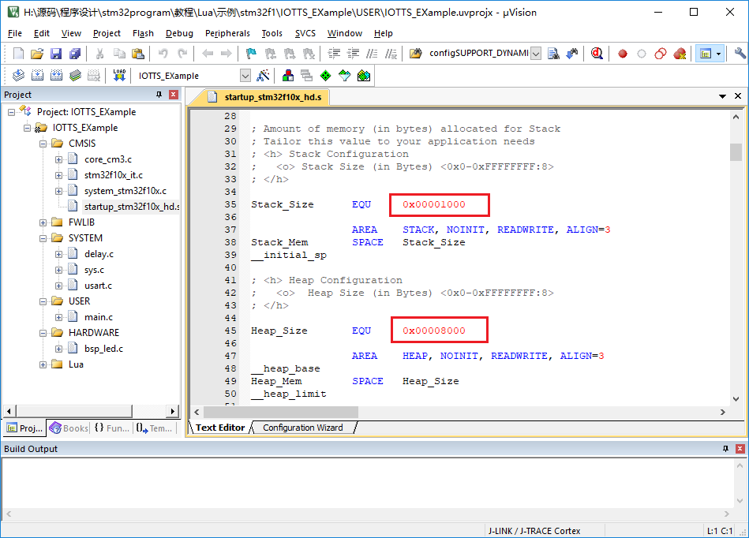
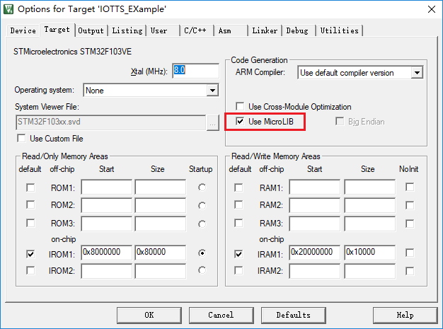

2.Lua硬件要求 l RAM >= 7.5Kb，建议16KB以上 l ROM >= 65kb，建议128kb以上 改动堆栈大小：堆最小为5.5kb，栈最小是1.5kb。在启动文件里把堆(Heap_Size)设置的足够大，我设置的0x00008000(32KB)是没问题的，其实要不了这么多。建议把栈设置的大一点（1KB足够）

把MicroLib的勾打上了，如下图：

然后我写了一个简单的函数来实现解释器：
1 2 3 4 5 6 7 8 9 10 11 12 13 14 15 16
/* 测试的Lua代码字符串 */ const char lua_test[] = { "print(\"Hello,I am lua!\\n--this is newline printf\")\n" "function foo()\n" " local i = 0\n" " local sum = 1\n" " while i <= 10 do\n" " sum = sum * 2\n" " i = i + 1\n" " end\n" "return sum\n" "end\n" "print(\"sum =\", foo())\n" "print(\"and sum = 2^11 =\", 2 ^ 11)\n" "print(\"exp(200) =\", math.exp(200))\n" };
1 2 3 4 5 6 7 8 9 10 11 12
/* 运行Lua */ static int do_file_script(void) { lua_State *L;